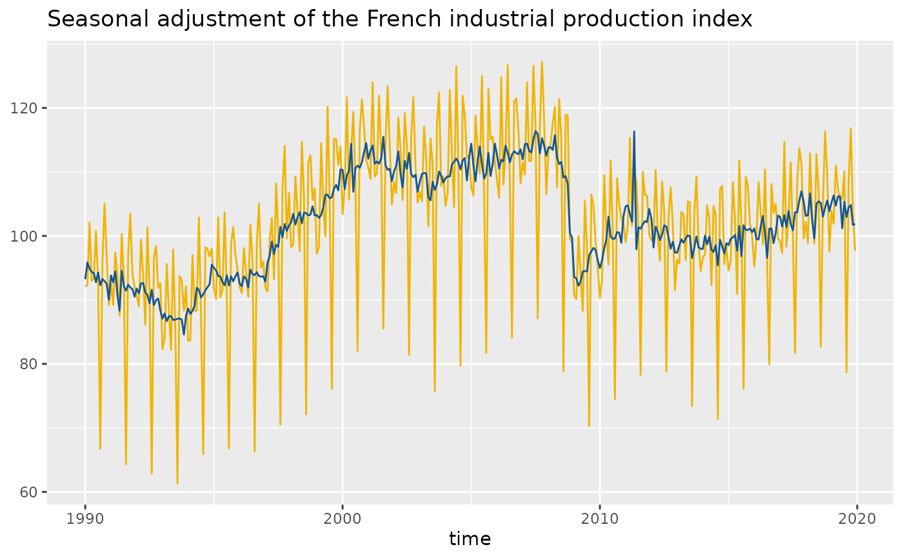
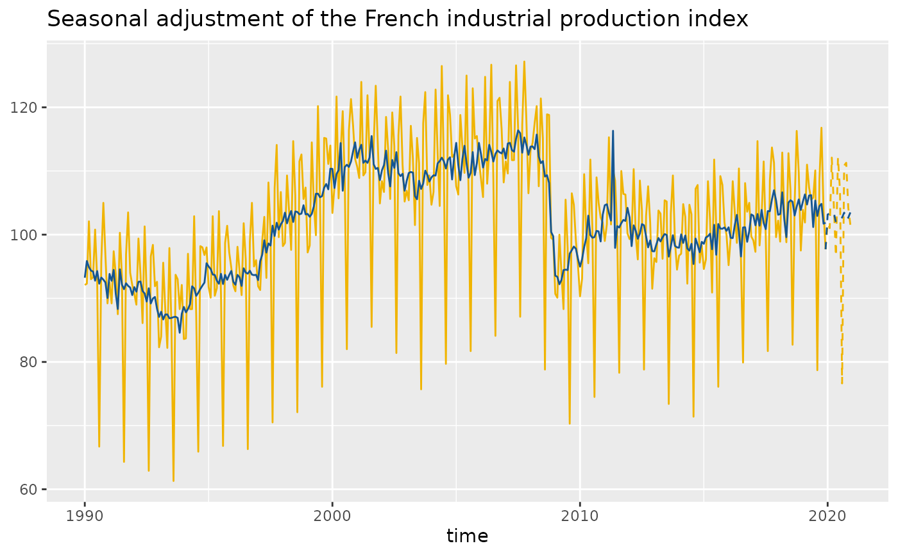

Performs a seasonal adjustment and plots a time series.
geom_sa() and stat_sa() are aliases: they both use the same arguments.
Use stat_sa() if you want to display the results with a non-standard geom.
Usage
geom_sa(
mapping = NULL,
data = NULL,
stat = "sa",
position = "identity",
...,
method = c("x13", "tramoseats"),
spec = NULL,
frequency = NULL,
message = TRUE,
component = "sa",
show.legend = NA,
inherit.aes = TRUE
)
stat_sa(
mapping = NULL,
data = NULL,
geom = "line",
position = "identity",
...,
method = c("x13", "tramoseats"),
spec = NULL,
frequency = NULL,
message = TRUE,
component = "sa",
show.legend = NA,
inherit.aes = TRUE
)Arguments
- mapping
Set of aesthetic mappings created by aes(). If specified and
inherit.aes = TRUE(the default), it is combined with the default mapping at the top level of the plot. You must supplymappingif there is no plot mapping.- data
A
data.framethat contains the data used for the seasonal adjustment.- stat
The statistical transformation to use on the data for this layer, as a string.
- position
Position adjustment, either as a string, or the result of a call to a position adjustment function.
- ...
Other arguments passed on to layer(). These are often aesthetics, used to set an aesthetic to a fixed value, like
colour = "red"orsize = 3.- method
the method used for the seasonal adjustment.
"x13"(by default) for the X-13ARIMA method and"tramoseats"for TRAMO-SEATS.- spec
the specification used for the seasonal adjustment. See x13() or tramoseats().
- frequency
the frequency of the time series. By default (
frequency = NULL), the frequency is computed automatically.- message
a
booleanindicating if a message is printed with the frequency used.- component
a
characterequals to the component to plot. The result must be a time series. See user_defined_variables() for the available parameters. By default (component = 'sa') the seasonal adjusted component is plotted.- show.legend
logical. Should this layer be included in the legends?
NA, the default, includes if any aesthetics are mapped.FALSEnever includes, andTRUEalways includes. It can also be a named logical vector to finely select the aesthetics to display.- inherit.aes
If
FALSE, overrides the default aesthetics, rather than combining with them.- geom
The geometric object to use to display the data
Examples
p_ipi_fr <- ggplot(data = ipi_c_eu_df, mapping = aes(x = date, y = FR)) +
geom_line(color = "#F0B400") +
labs(title = "Seasonal adjustment of the French industrial production index",
x = "time", y = NULL)
# To add the seasonal adjusted series:
p_ipi_fr +
geom_sa(color = "#155692")

# To add the forecasts of the input data and the seasonal adjusted series:
p_sa <- p_ipi_fr +
geom_sa(component = "y_f", linetype = 2, message = FALSE, color = "#F0B400") +
geom_sa(component = "sa", color = "#155692", message = FALSE) +
geom_sa(component = "sa_f", color = "#155692", linetype = 2, message = FALSE)
p_sa
